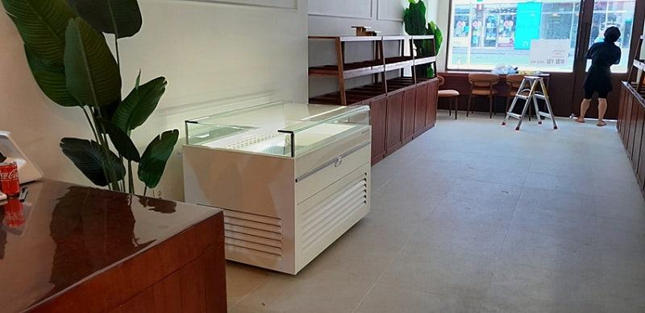
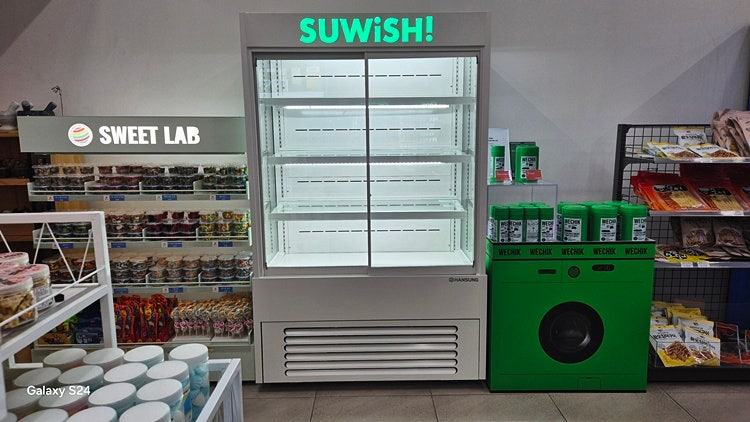
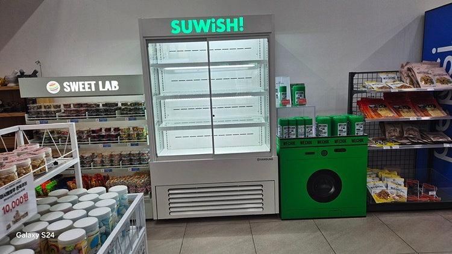
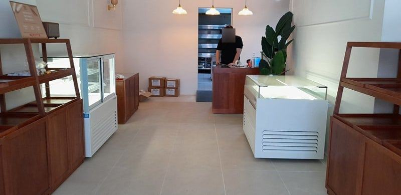
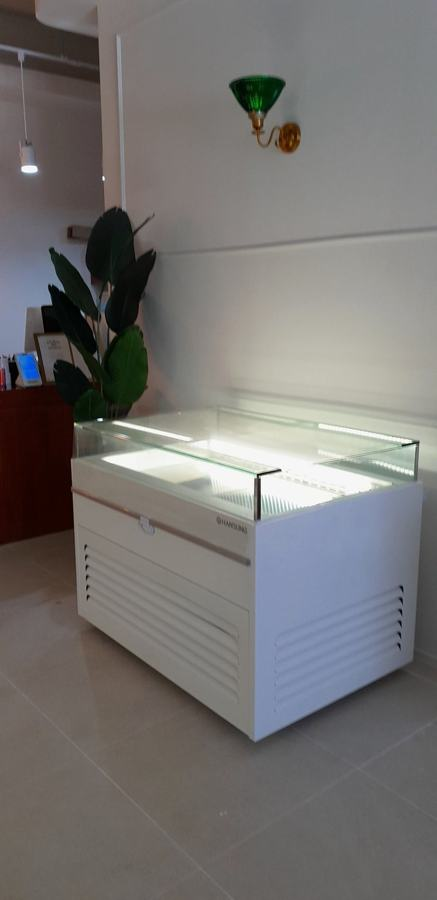
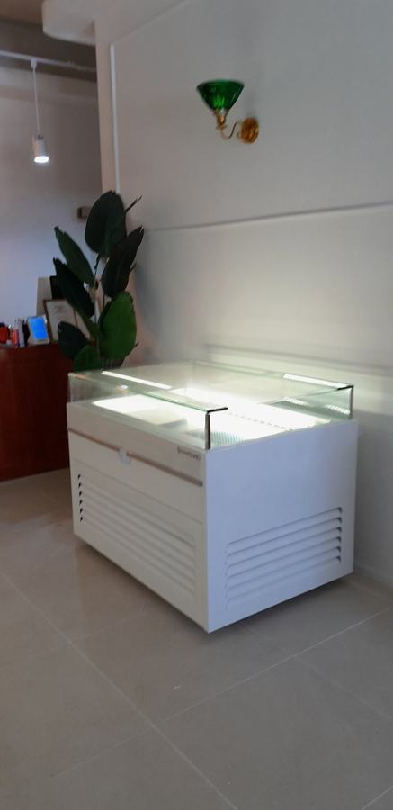

와인(음료)쇼케이스
업소용음료수냉장고 배치, 벽면·통로·계산대 중 어디가 맞을까

업소용음료수냉장고는 손님이 음료를 집는 시점에 맞춰 배치하면 됩니다. 목적 구매가 많은 매장은 벽면, 지나가다 집는 충동 구매를 노리면 통로 측면, 한 병씩 더 사게 하려면 계산대 옆이 맞고, 어느 자리든 문 열림 방향과 열 배출 공간을 함께 확인해야 합니다.
안녕하세요. 음료 진열 냉장고를 매장 구조에 맞춰 만드는 한성쇼케이스입니다.
음료 냉장고는 크기와 디자인을 고르는 데는 시간을 많이 쓰시는데, 정작 어디에 둘지는 공사 막바지에 남는 자리로 정하시는 경우가 많습니다.
그러다 보니 손님이 문을 열면 통로가 막히거나, 계산대 직원과 부딪히는 일이 생기죠.
음료는 손님이 오래 고민하지 않고 집어 가는 상품입니다. 그래서 놓인 자리가 판매량과 매장 혼잡도에 그대로 영향을 줍니다.
오늘은 업소용음료수냉장고를 매장 어디에 둘지 정할 때 쓰는 세 가지 자리와, 자리마다 확인해야 할 점을 정리해 드리겠습니다.
1. 배치 전에 볼 세 가지 동선
자리를 고르기 전에 매장 평면도에 세 가지를 그려 보세요. 출입구에서 계산대까지 손님이 걷는 길, 주방이나 창고에서 음료를 채우러 오는 직원의 길, 그리고 냉장고 문이 열렸을 때 차지하는 공간입니다.
이 세 가지가 한 지점에서 겹치면 피크 시간마다 병목이 생깁니다. 특히 음료 박스를 들고 오는 직원 동선은 영업 중에도 반복되기 때문에 생각보다 중요합니다.
- 출입구에서 계산대까지 막히는 지점이 없는지 보세요.
- 음료 박스를 들고 오는 길이 손님 길과 겹치지 않게 하세요.
- 문이 열렸을 때 통로 폭이 얼마나 남는지 재 보세요.
2. 벽면 배치
가장 무난한 자리입니다. 통로를 침범하지 않고 한쪽 벽에 음료를 종류별로 정리하기 좋아, 편의점이나 마트처럼 손님이 음료를 사러 일부러 찾아오는 매장에 맞습니다.
다만 출입구에서 바로 보이지 않는 벽이라면 손님이 음료가 있는지 모르고 지나칠 수 있습니다. 이럴 땐 상단 간판이나 내부 조명을 밝게 해서 멀리서도 눈에 띄게 하는 방법을 함께 쓰세요.


3. 통로 측면 배치
손님이 걷는 길과 닿는 면적이 넓어 지나가다 음료를 집게 만드는 데 유리합니다. 샐러드나 도시락 매장처럼 음식과 음료를 같이 사는 매장에서 효과가 큽니다.
대신 통로 폭이 줄어들기 때문에 문 열림 방향과 선반 깊이를 꼭 확인해야 합니다. 여닫이문이 통로 쪽으로 열리면 손님끼리 부딪히기 쉬우니, 통로가 좁다면 미닫이문이나 문 방향을 바꾼 구성을 검토해 보세요.
4. 계산대 옆 배치
결제 직전에 마지막으로 눈에 들어오는 자리라 생수나 작은 병 음료처럼 한 병 더 사기 쉬운 상품에 잘 맞습니다.
카페나 베이커리에서 병 음료를 함께 팔 때도 이 자리를 많이 씁니다.
직원이 일하는 구역과 붙어 있어 피크 시간에는 오히려 병목이 될 수 있습니다. 냉장고 문이 직원 뒤쪽으로 열리지 않는지, 줄 선 손님이 냉장고 앞을 가리지 않는지 확인하세요.
- 계산대 직원 등 뒤로 문이 열리지 않게 하세요.
- 줄 서는 방향과 냉장고 앞면이 겹치지 않게 하세요.
5. 어느 자리든 확인할 설치 조건
음료 냉장고는 늘 낮은 온도를 유지해야 해서 기계 부담이 큰 편입니다. 뒷면과 옆면에 통풍 공간을 남기고, 햇빛이 바로 드는 창가나 오븐 옆은 피해 주세요.
전용 콘센트 위치도 배치와 함께 정해 두셔야 멀티탭을 끌어오는 일이 없습니다.
체크리스트
- 손님·직원·문 열림 동선이 겹치는 지점
- 벽면·통로 측면·계산대 옆 중 매장 목적에 맞는 자리
- 문 열림 방향과 통로 남는 폭
- 뒷면·옆면 통풍 공간과 햇빛·열기
- 전용 콘센트 위치
현장에서 자주 보는 경우: 기성 규격이 자리에 안 맞는 음료 매장
베이커리, 슈퍼마켓, 카페에서 음료수쇼케이스를 알아보시는 사장님들이 가장 많이 막히는 지점은 설치 환경입니다.
기성품은 크기가 정해져 있어 매장 공간의 크기와 위치, 동선에 맞추기 어렵고, 디자인이 인테리어와 따로 노는 경우도 많습니다.
이런 매장은 실측부터 시공까지 맞춰 진행합니다. 자리와 동선에 맞춰 크기를 잡고, 낮은 온도를 늘 유지해야 하는 음료 냉장고 특성상 성에 방지 기능과 온도 조절 기능이 들어가는지도 함께 확인했습니다.
수분이 날아가면 안 되는 상품을 함께 넣는 매장에는 간냉식을 권해 드렸습니다.





자주 묻는 질문
음료 냉장고를 창가에 두면 안 되나요?
햇빛이 바로 들면 내부 온도를 지키느라 기계가 더 오래 돌아갑니다. 창가에 둬야 한다면 블라인드로 직사광선을 가리고 뒷면 통풍 공간을 넉넉히 남겨 주세요.
통로가 좁은데 여닫이문 대신 다른 방식이 있나요?
통로 폭과 진열량에 따라 미닫이문이나 문 방향을 바꾼 구성을 검토할 수 있습니다. 매장 평면도를 보내 주시면 맞는 문 방식을 함께 정해 드립니다.
매장 자리에 맞춰 크기를 바꿀 수 있나요?
실측한 자리에 맞춰 가로와 높이, 디자인을 정해 제작합니다. 설치 후 A/S는 전국 240여 개 센터를 통해 받으실 수 있습니다.
매장 조건에 맞춰 만드는 한성쇼케이스
원하시는 제품 사진과 설치할 공간 사진만 보내 주셔도 매장에 맞는 구성을 추천해 드립니다.
- 전국 240여 개 A/S 전담 센터 운영
- 본사 대량 자재 매입으로 품질 대비 합리적인 가격
- 유럽제·삼성 냉각 콤프레셔 적용
- 국내 최초 쇼케이스 전문 디자이너 상주
매장 폭과 원하는 진열 구성을 알려 주세요. 실측과 견적을 안내해 드립니다.
031-986-2458